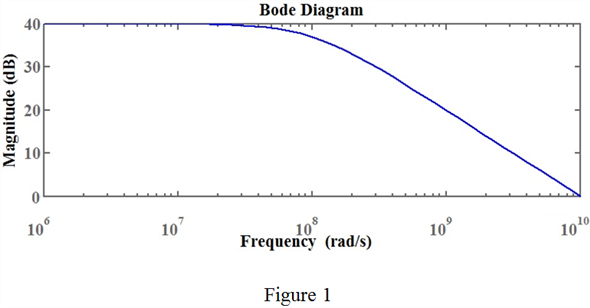

Step 1:
Refer to the circuit diagram of the active-loaded MOS differential amplifier in Figure 9.37(a) in the textbook.
Write the expression for trans-conductance .
.
Write the expression for pole frequency acquired due to  at high frequencies.
at high frequencies.
Similarly, write the expression for zero frequency acquired due to  at high frequencies.
at high frequencies.
Write the expression for output pole frequency.
Step 2:
Write the expression for gain of the active-loaded MOS differential amplifier.
Recall the fact that at large capacitor load, output pole frequency  is dominant.
is dominant.
Thus, neglect the effect of frequencies and .
Step 3:
Rewrite the gain,  expression.
expression.
Step 4:
Equate the magnitude of the gain to unity.
Solve for .
.
Here  is the output resistance.
is the output resistance.
Write the expression for output resistance .
Step 5:
Simplify further.
Hence proved that unity gain frequency  of the active-loaded MOS differential amplifier is .
of the active-loaded MOS differential amplifier is .
Step 6:
Write the expression ac output resistance.
 …… (1)
…… (1)
Early voltage  is 20 V
is 20 V
 is the drain current flowing through single transistor.
is the drain current flowing through single transistor.
Drain current  is,
is,
Here  is the total current flow through the circuit.
is the total current flow through the circuit.
Substitute 0.1 mA for  and 20 for
and 20 for  in equation (1).
in equation (1).
Find the trans-conductance  for one transistor.
for one transistor.
Trans-conductance  is identical to all the transistors.
is identical to all the transistors.

Over-driven  is 0.2 V.
is 0.2 V.
Substitute 0.2 V for  , 0.1 mA for
, 0.1 mA for  in the equation.
in the equation.
Step 7:
Write the expression for dc voltage gain.
ac resistors of all the transistors are equal.
Thus, .
Substitute  for
for  and for
and for in the expression.
in the expression.
Step 8:
Therefore, the DC voltage gain  is,
is,  .
.
Step 9:
The expression for output pole frequency is,
Substitute 100 for , 100 fF for
, 100 fF for  in the expression.
in the expression.
Therefore, the pole frequency acquired at low frequency,  is, .
is, .
Step 10:
Consider the expression for .
Substitute for  , for
, for  and for
and for  .
.
Thus, the value of  is, .
is, .
Step 11:
The expression for pole frequency acquired due to

at high frequencies is,
Substitute  for , 25 fF for in the expression.
for , 25 fF for in the expression.
Therefore, the pole frequency  acquired at high frequencies is, .
acquired at high frequencies is, .
Step 12:
Similarly, the expression for zero frequency acquired due to  at high frequencies,
at high frequencies,
Substitute  for , 25 fF for in the expression.
for , 25 fF for in the expression.
Therefore, the zero frequency  acquired at high frequencies is, .
acquired at high frequencies is, .
Step 13:
Write the expression for dc voltage gain.
Substitute 100 for , 100 fF for
, 100 fF for  and
and  for
for  in the expression
in the expression
Find the magnitude of the expression.
Step 14:
Write MATLAB code for plotting gain magnitude response of a circuit:
>> num=[100];>> den=[10^-8 1]>> k=tf(num,den);>> bode(k);
The following is the MATLAB output.

Thus, the plot of the gain is drawn.